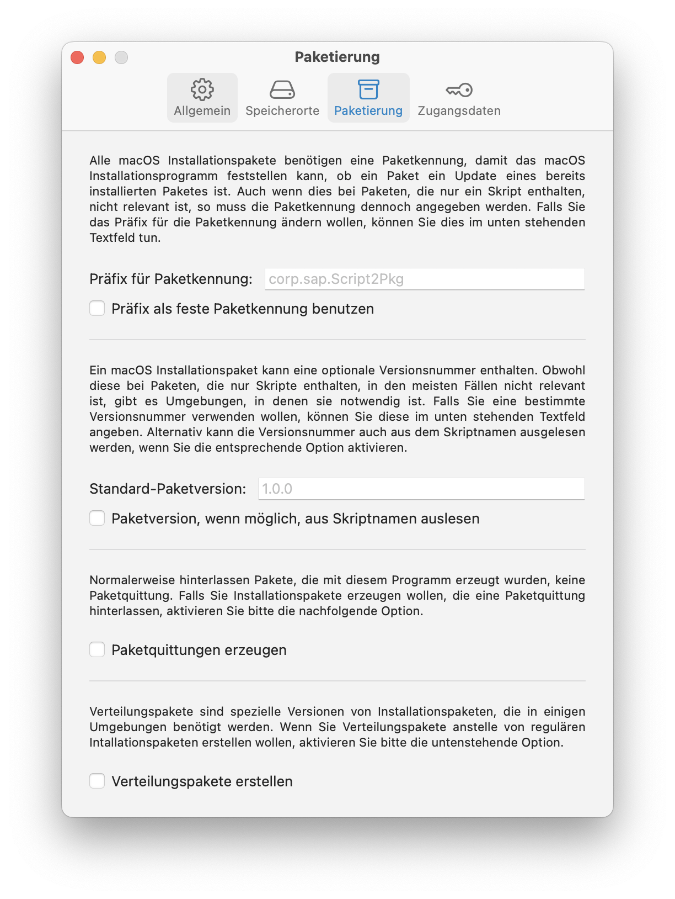
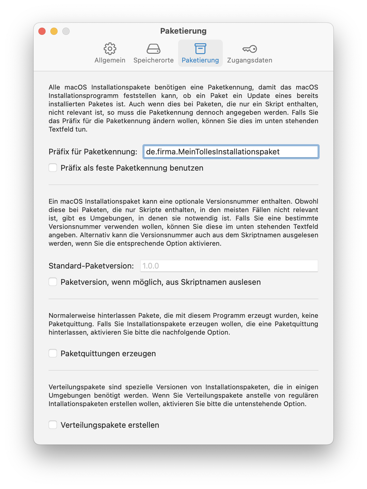
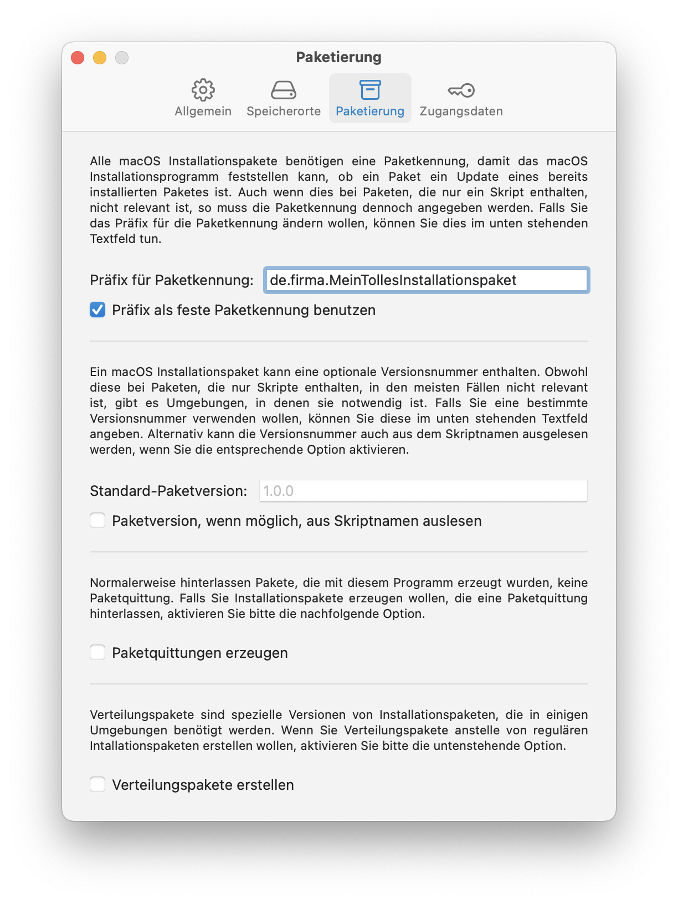

Script2Pkg
Script2Pkg
Script2Pkg
Paketkennung festlegen
Alle macOS Installationspakete benötigen eine Paketkennung, damit das macOS Installationsprogramm feststellen kann, ob ein Paket ein Update eines bereits installierten Paketes ist. Auch wenn dies bei nutzlastfreien Paketen nicht relevant ist, so muss die Paketkennung dennoch angegeben werden.
Standardmäßig beginnen die Paketkennungen von Paketen, die mit dieser Anwendung erstellt wurden, mit: corp.sap.Script2Pkg
Dies wird als Präfix für die Paketkennung bezeichnet. An dieses Präfix wird bei der Paketerstellung eine zufällig generierte UUID angehangen. Somit würde die Anwendung mit der Standardeinstellung zum Beispiel folgende Paketkennung verwenden: corp.sap.Script2Pkg.5BA0E8CB-99B2-4FC2-85AE-0C1CC85ACC05
Um ein anderes Präfix für die Paketkennung zu verwenden, gehen Sie bitte wie folgt vor:
1. Wählen Sie im Menü Script2Pkg den Menüpunkt Einstellungen … aus.

2. Wählen Sie die Option Paketierung aus.

3. Klicken Sie in das Textfeld mit der Bezeichnung Präfix für Paketkennung: und geben Sie das gewünschte Präfix ein. Von nun an werden alle erstellten Pakete eine Paketkennung enthalten, die aus dem angegebenen Präfix, gefolgt von einer UUID, besteht.

Wenn Sie das im Feld Präfix für Paketkennung: angegebene Präfix gerne als feste Paketkennung benutzen möchte, aktivieren Sie bitte die Option Präfix als feste Paketkennung benutzen .
Von nun an werden alle erstellten Pakete eine Paketkennung enthalten, die nur aus dem angegebenen Präfix besteht, ohne dass noch eine UUID angehangen wird.

Standardeinstellung wiederherstellen
Um die Standardeinstellung wiederherzustellen, löschen Sie bitte den Text, den Sie im Textfeld Präfix für Paketkennung: eingegeben haben. Falls zutreffend, deaktivieren Sie bitte außerdem die Option Präfix als feste Paketkennung benutzen .